Passo a passo
- Abrir a lista. No menu DOCUMENTO, clique em Documento. A tela mostra o quadro Pesquisa com Tipo Documento (TODAS), Código, Revisão, Situação (TODAS), Título, Setor Responsável (TODAS), Data de Validade e Data de Emissão (cada uma com "de" e "até"), os botões PESQUISAR, LIMPAR e IMPRIMIR e o atalho Incluir.
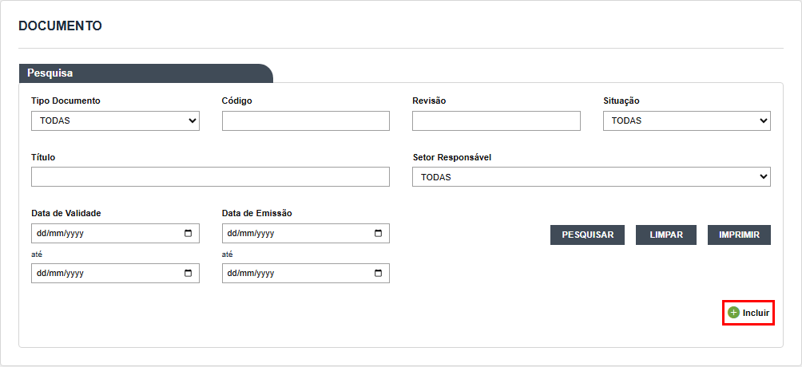
A imagem mostra a tela recém-aberta, com os filtros e o botão Incluir marcado em vermelho, ainda sem lista.
- Pesquisar. Preencha o que quiser e clique em PESQUISAR. A lista traz as colunas TIPO, CÓDIGO, REVISÃO, TÍTULO, SETOR RESPONSÁVEL, SITUAÇÃO, DATA EMISSÃO, DATA VALIDADE e A VENCER (dias), mais três colunas de ação (lupa, editar/excluir e LOG), e fica paginada (10 linhas por página) com Anterior e Próxima.
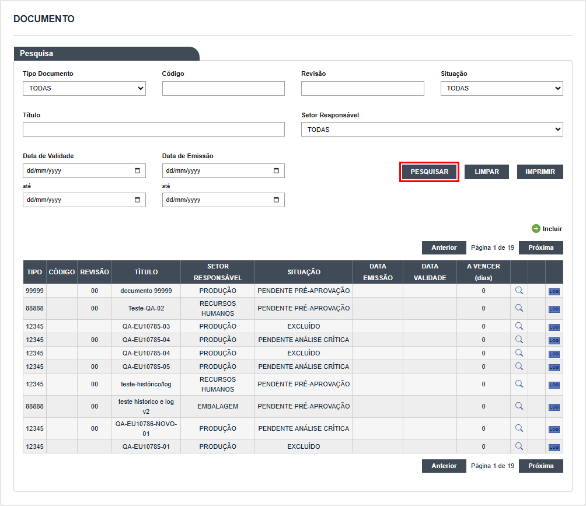
A imagem mostra a lista sem filtro (a barra de página indica "Página 1 de 19"), com as três colunas de ação e o botão PESQUISAR marcado.
O filtro Situação tem nove opções: PRÉ INCLUSÃO, PENDENTE ANÁLISE CRÍTICA, PENDENTE PRÉ-APROVAÇÃO, PENDENTE APROVAÇÃO, APROVADO, VIGENTE, CANCELADO, SUBSTITUÍDO e EXCLUÍDO (não existe "EM INCLUSÃO" no filtro; nenhuma tela testada cancela documento). Exemplo com VIGENTE:
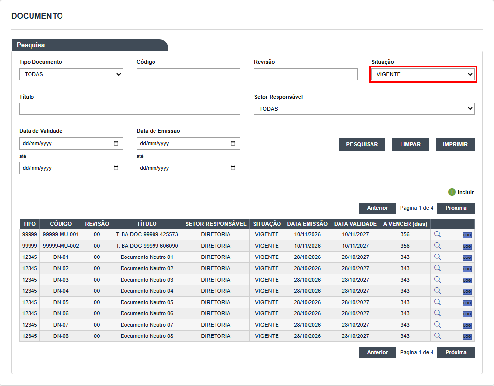
A imagem mostra o filtro Situação em VIGENTE e a lista só com documentos vigentes.
Os filtros se combinam, por exemplo por tipo e setor, e a paginação funciona:
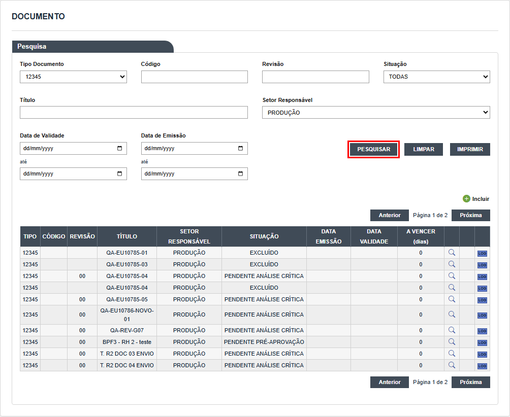
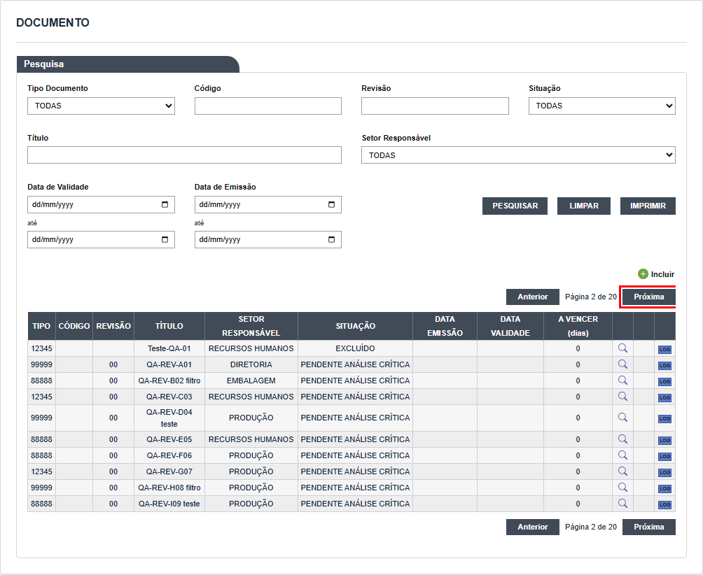
- Incluir. Clique em Incluir. Abre o quadro Inclusão com Tipo Documento*, Código e Revisão (bloqueados), Situação (bloqueada, "EM INCLUSÃO"), Título*, Setor Responsável*, Data de Emissão e Data de Validade (bloqueadas) e os botões VOLTAR e SALVAR.
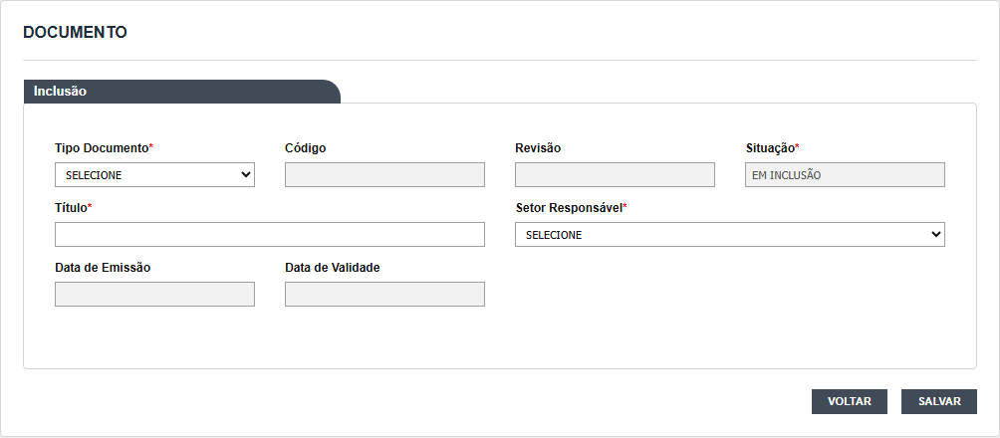
A imagem mostra o formulário de inclusão vazio, com "SELECIONE" nas duas listas e a Situação "EM INCLUSÃO".
- Salvar vazio (para conhecer as mensagens). Clique em SALVAR sem preencher. A tela mostra, numa faixa vermelha, as três mensagens juntas.
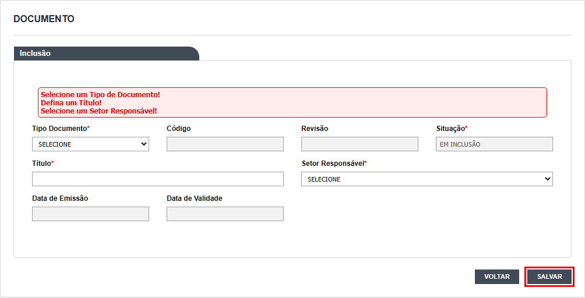
A imagem mostra a faixa vermelha com "Selecione um Tipo de Documento!", "Defina um Título!" e "Selecione um Setor Responsável!" e o botão SALVAR marcado.
- Preencher e salvar. Escolha o Tipo Documento, escreva o Título (até 300 caracteres; o campo corta no 300º; aceita acento, "&" e aspas) e escolha o Setor Responsável. Clique em SALVAR; o sistema pergunta "Confirma a inclusão do documento?". Clique em SIM.
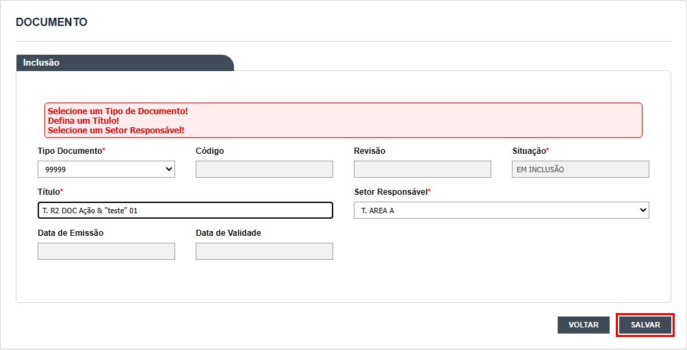
A imagem mostra o formulário com o tipo 99999, o título com acento, "&" e aspas e o setor responsável escolhido, com SALVAR marcado.
A imagem mostra a pergunta com SIM e NÃO (SIM marcado).
- Cadastro de edição. Depois de gravar, o sistema abre o cadastro de edição, com a situação PRÉ INCLUSÃO e sem código (ele só sai na aprovação). A tela passa a ter os quadros Setores Revisores, Equipamentos (tags), Aplicação, Documentos Referência, Documento Anexo, Histórico e Justificativa.
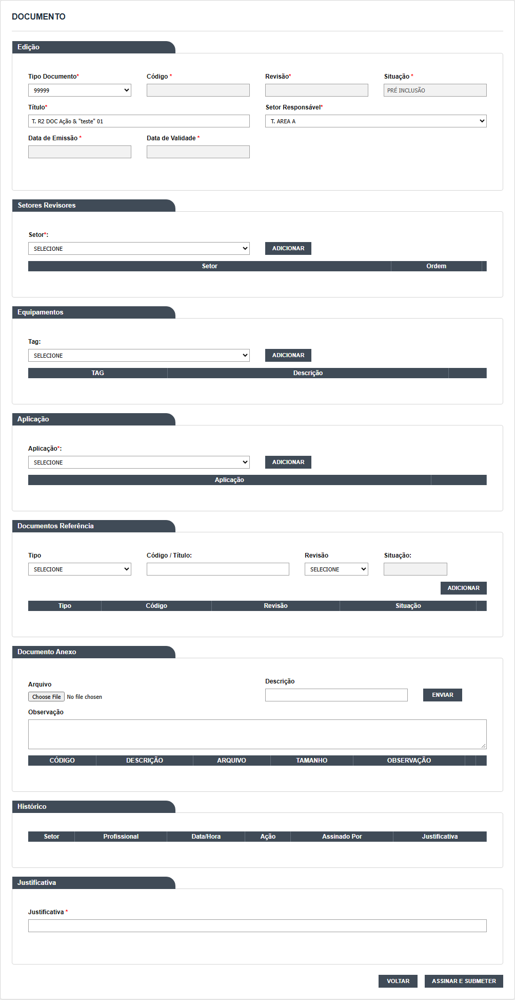
A imagem mostra a tela de edição inteira, com todos os quadros ainda vazios.
- Anexar o arquivo de trabalho. No quadro Documento Anexo, escolha o arquivo, preencha a descrição (se quiser) e clique em ENVIAR. Aparece "Arquivo enviado com sucesso." O quadro tem as colunas CÓDIGO (numerado pelo sistema), DESCRIÇÃO (se ficar em branco, a tabela repete o nome do arquivo), ARQUIVO, TAMANHO, OBSERVAÇÃO e dois ícones (excluir e abrir). O sistema aceita um anexo; o segundo é recusado.
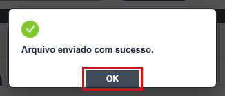
A imagem mostra a caixa "Arquivo enviado com sucesso." com OK marcado.
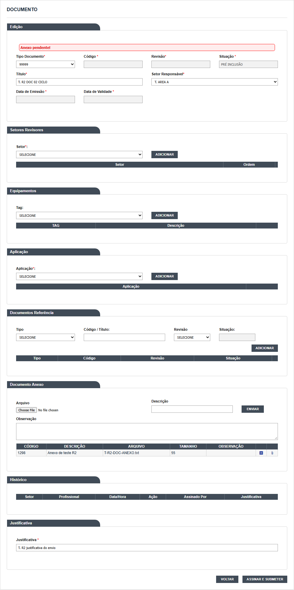
A imagem mostra o anexo na tabela, com os ícones de excluir e abrir.
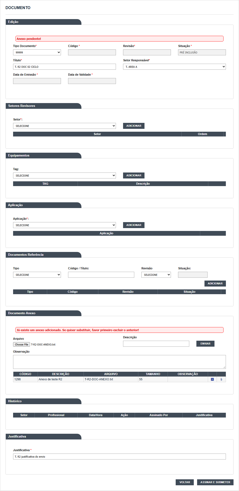
A imagem mostra a faixa "Já existe um anexo adicionado. Se quiser substituir, favor primeiro excluir o anterior!" no quadro do anexo.
- Setores revisores e aplicação. Em Setores Revisores, escolha o setor e clique em ADICIONAR; a ordem aparece na tabela (Setor e Ordem, com setas para subir e descer e o ícone de excluir). Em Aplicação, escolha o setor onde o documento vai valer e clique em ADICIONAR. A opção TODOS existe e se desdobra em uma linha por setor da Estrutura funcional (20 no ambiente de teste). Tags (Equipamentos) e Documentos Referência são opcionais (os quadros existem; não foram preenchidos no teste).
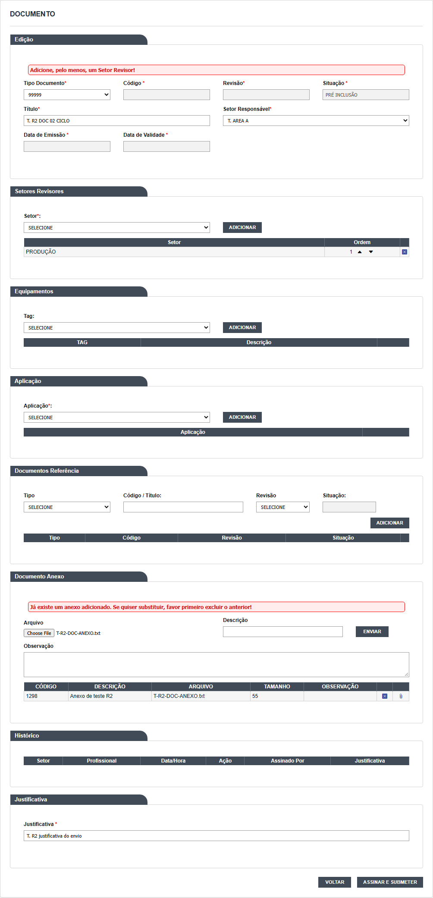
A imagem mostra a tabela de setores revisores com PRODUÇÃO, ordem 1, setas e ícone de excluir.
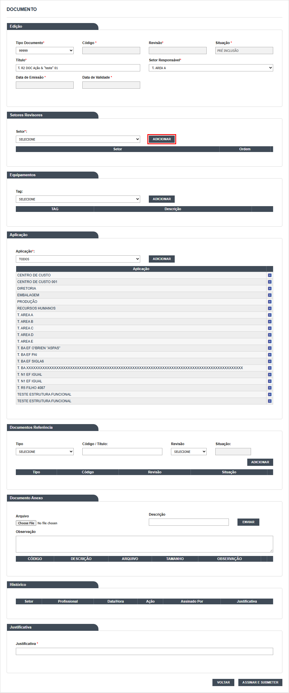
A imagem mostra o quadro Aplicação com uma linha para cada setor depois de adicionar TODOS.
- Justificativa e envio. Escreva a Justificativa ao pé da tela e clique em ASSINAR E SUBMETER. A ordem das conferências é: justificativa, anexo, setor revisor, aplicação (ver "O que o sistema recusa").
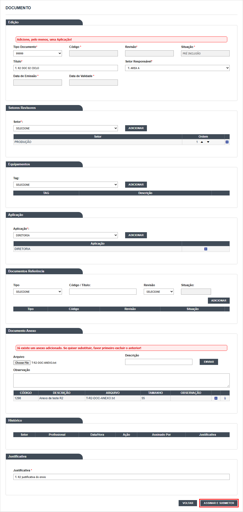
A imagem mostra o documento em "PRÉ INCLUSÃO" com setor revisor, aplicação, um anexo na tabela, a justificativa preenchida e ASSINAR E SUBMETER marcado.
-
Confirmar. O sistema pergunta "Confirma a alteração do documento?". Clique em SIM.
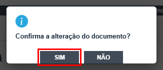
Confirmação · clique para ampliar A imagem mostra a caixa "Confirma a alteração do documento?" com SIM marcado.
-
Autenticar. Na janela Autenticação, digite o seu usuário e a sua senha e clique em AUTENTICAR. CANCELAR fecha a janela e deixa a edição como estava (PRÉ INCLUSÃO).
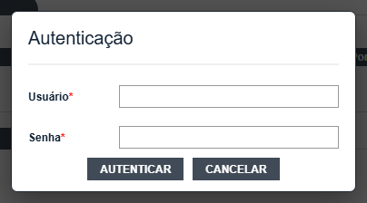
Janela de autenticação · clique para ampliar A imagem mostra a janela "Autenticação" com os campos Usuário e Senha vazios e os botões AUTENTICAR e CANCELAR.
-
O que acontece depois da senha certa. Falha conhecida (DV-DOC-N-012): a tela não mostra nenhuma mensagem e continua na edição com a Situação ainda "PRÉ INCLUSÃO" e o botão ASSINAR E SUBMETER ativo, embora o documento já tenha sido enviado. Para conferir, volte à lista: o documento aparece em PENDENTE ANÁLISE CRÍTICA, com a Revisão 00 e só os ícones Visualizar e LOG. Não assine de novo.
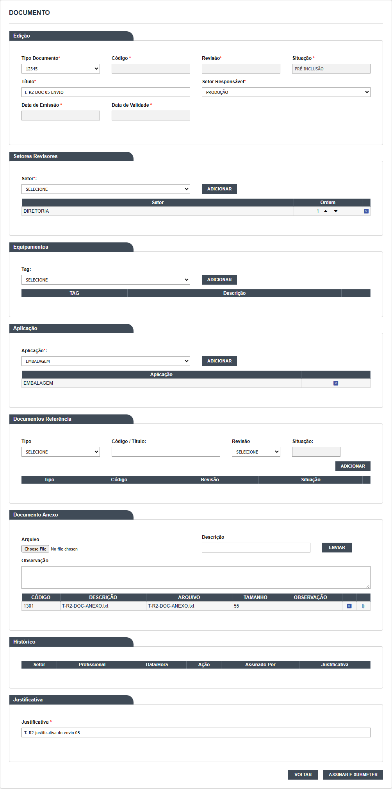
Depois do envio: sem mensagem e com a situação antiga · clique para ampliar A imagem mostra a edição sem mensagem de sucesso e com a Situação ainda PRÉ INCLUSÃO.
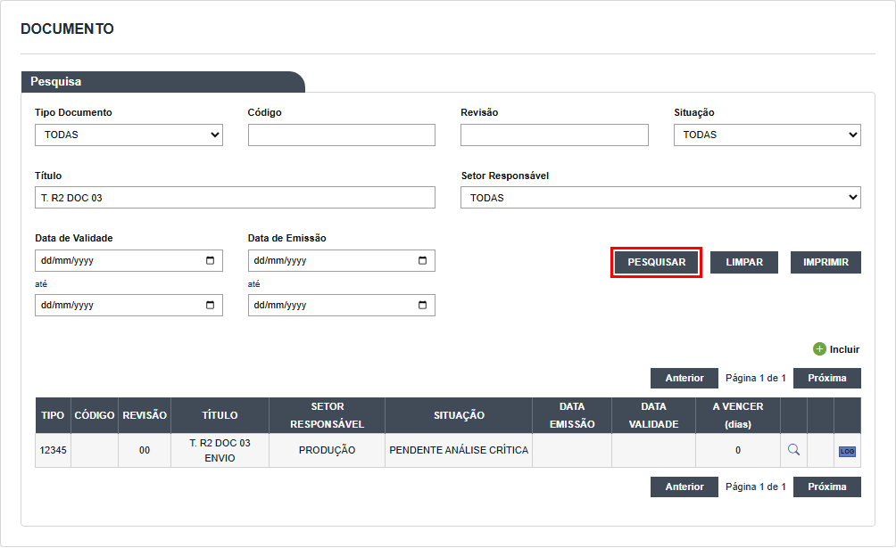
Lista: documento em PENDENTE ANÁLISE CRÍTICA · clique para ampliar A imagem mostra o mesmo documento na lista, já em PENDENTE ANÁLISE CRÍTICA, só com os ícones Visualizar e LOG.
-
Ver o Log. O ícone LOG da linha abre a janela Log, com as colunas Alteração, Valor Antigo, Valor Novo, Data, Hora, Usuário Alteração e Justificativa. Registra a criação ("INCLUSÃO DO REGISTRO"), o anexo ("Inclusão de anexo"), o envio e a exclusão.
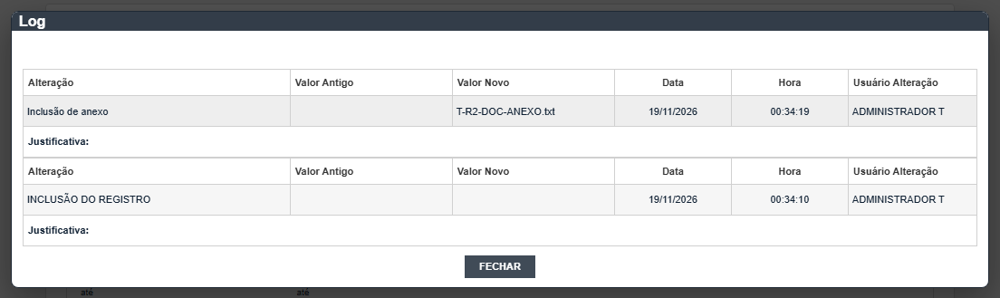
Log de um documento em PRÉ INCLUSÃO · clique para ampliar 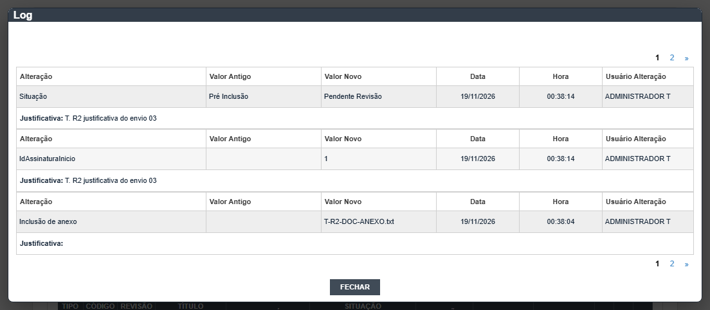
Log depois do envio · clique para ampliar A segunda imagem mostra "Situação: Pré Inclusão para Pendente Revisão", com a justificativa do envio, e uma linha "IdAssinaturaInicio" (DV-DOC-N-013).
-
Visualizar. A lupa abre a tela Visualizar, só de leitura, com os quadros Documento Anexo, Documento Anexo Final e Histórico.
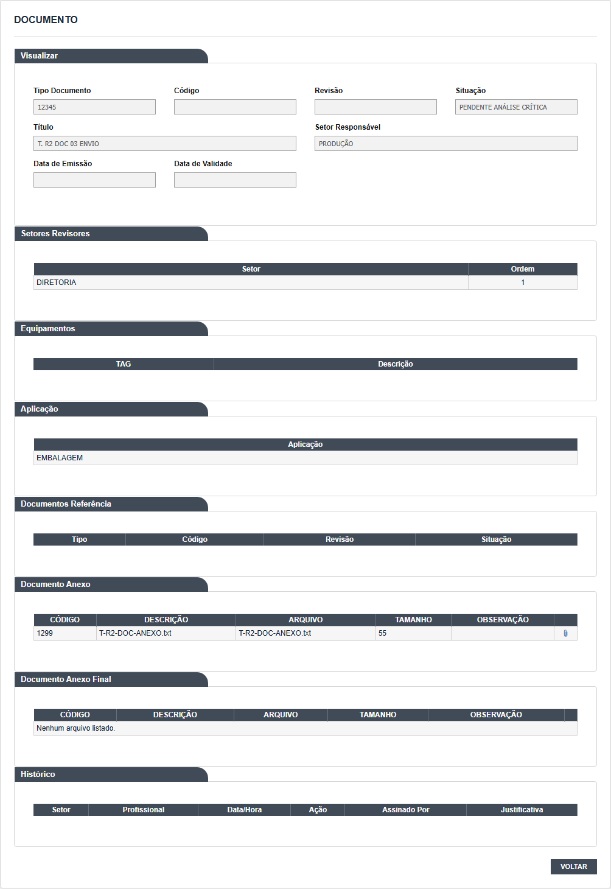
Tela Visualizar · clique para ampliar A imagem mostra a tela em só leitura; o quadro Histórico está vazio (ver DV-DOC-N-002).
-
Excluir (só em PRÉ INCLUSÃO). Na lista, o ícone de excluir só aparece em documento em PRÉ INCLUSÃO (a linha tem Editar, Excluir e LOG); depois do envio e em EXCLUÍDO só há Visualizar e LOG. O ícone abre a tela "Exclusão", com os dados do documento e os botões VOLTAR e EXCLUIR. A ordem é: "Confirma a exclusão do documento?" (SIM), a caixa "Informe a justificativa" (texto e OK) e "Exclusão efetuada com sucesso." (OK). Não há segunda confirmação. A situação vira EXCLUÍDO.
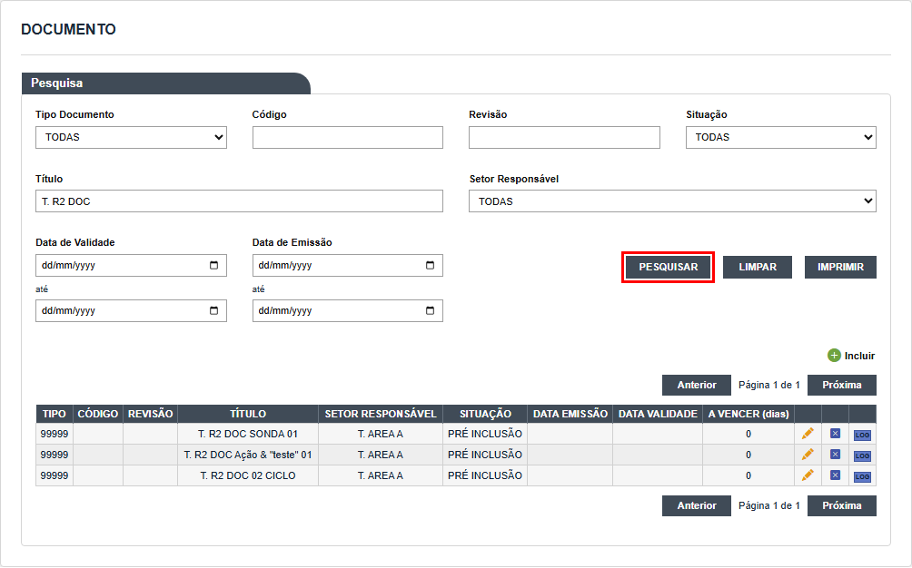
Lista com documentos em PRÉ INCLUSÃO e os ícones Editar, Excluir e LOG · clique para ampliar 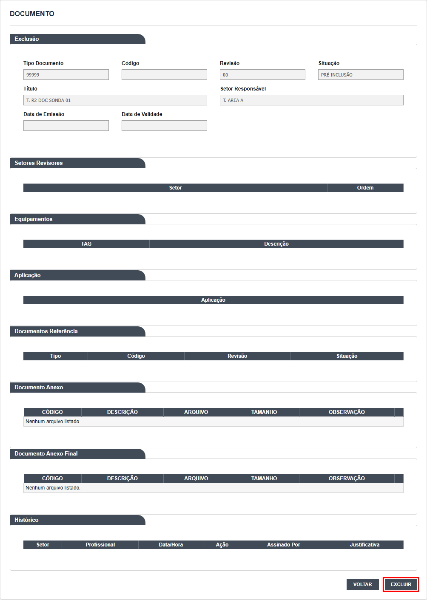
Tela de exclusão · clique para ampliar 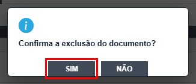
Confirma a exclusão do documento? · clique para ampliar 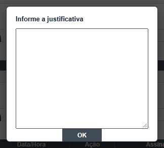
Caixa Informe a justificativa · clique para ampliar A imagem acima mostra a área de texto e o botão OK. Com a justificativa vazia, a própria caixa mostra "A justificativa é obrigatória!":
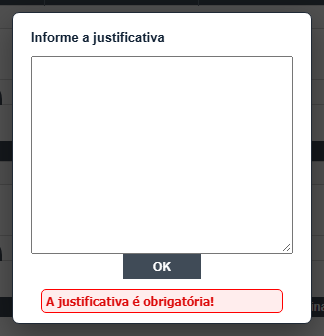
Justificativa obrigatória · clique para ampliar 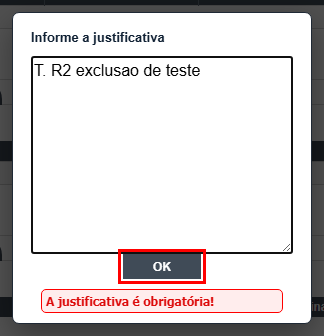
Justificativa preenchida · clique para ampliar 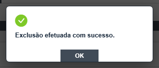
Exclusão efetuada com sucesso · clique para ampliar 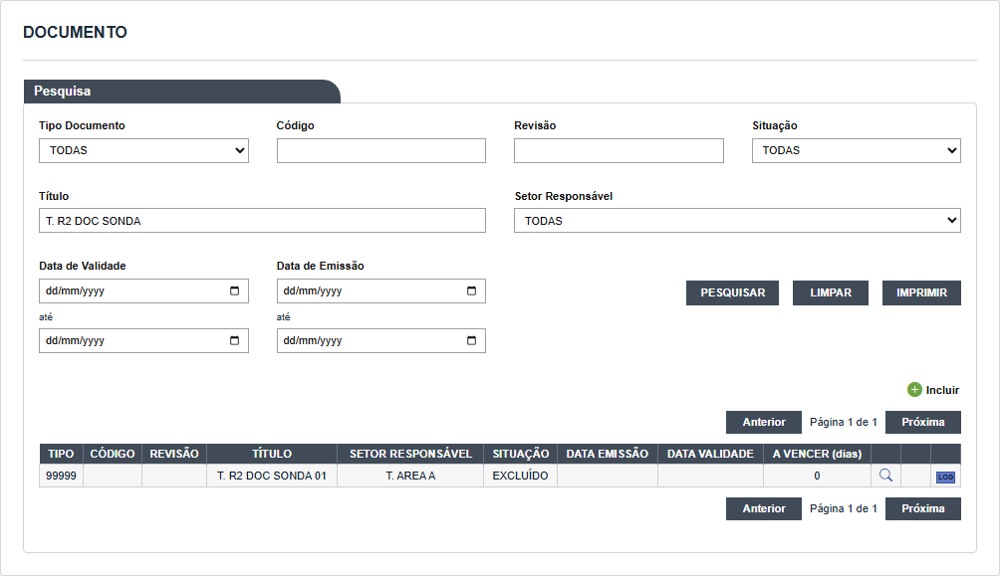
Lista: documento EXCLUÍDO · clique para ampliar 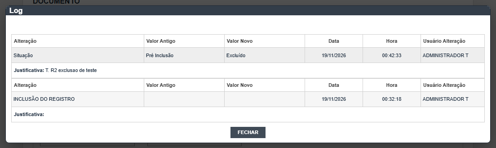
Log do documento excluído · clique para ampliar A última imagem mostra "Situação: Pré Inclusão para Excluído" com a justificativa digitada.
-
Imprimir. IMPRIMIR gera o PDF da lista (a lista mestra) numa nova aba, sem indicador de espera. No teste de 19/11/2026 demorou cerca de 1 segundo (em outra tentativa do mesmo dia, mais de 15 segundos: o tempo varia). O PDF sai em paisagem, com todas as linhas (12 páginas no teste, não só as 10 da tela), cabeçalho "Laboratório Farmacêutico / DOCUMENTOS", data, usuário, "FILTRO: TODOS" e as colunas TIPO, CÓDIGO, REVISÃO, TÍTULO, SETOR RESPONSÁVEL, SETOR REVISOR, SITUAÇÃO, DATA EMISSÃO, DATA VALIDADE e A VENCER. Corrige o DV-DOC-015 do legado (que dava erro de servidor). Falhas: quadro "SUA LOGO AQUI" e coluna SETOR REVISOR em branco (DV-DOC-N-014). A coluna TIPO traz a descrição do tipo, e a tela mostra o código (ponto para validar com a área).
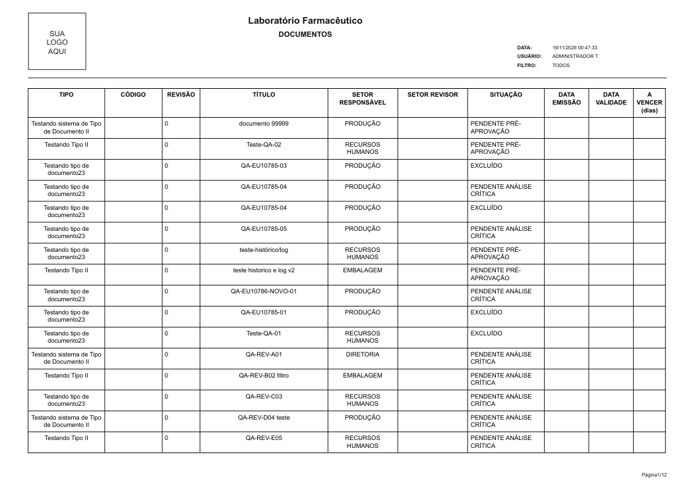
PDF da lista, primeira página · clique para ampliar